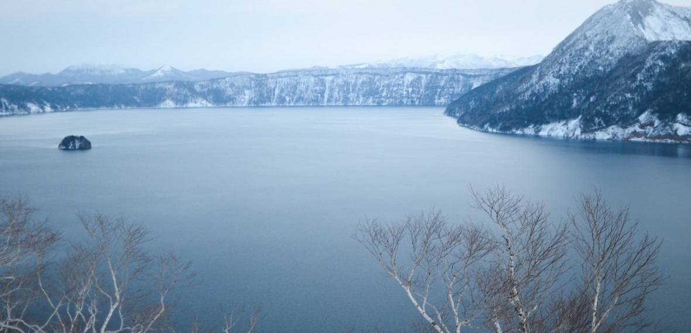

摩周湖
概要
位置：北海道東部
広さ：19.6km2
特徴:バイカル湖に次いで透明度世界2位
カムイシュ島という溶岩ドームによってできた小さい島がある。 長径110メートル、短径40メートル、高さは30メートル程度の小さい島で周囲は断崖で囲まれている。 エゾムラサキツツジやコケモモなどが主な植生で、ササ、シダ類は少ない。 湖面にすら立ち入ることができないので民間人には上陸することができない。
環境
約7000年前の巨大な噴火によってできたくぼみに水がたまってできた湖（=カルデラ湖）であり、栄養が非常に少ない極貧栄養湖。川に繋がっておらず、雨が土壌で濾過されて流入するため水質がきれい。摩周湖の水は大気汚染の影響を忠実に反映するため、地球の環境変化を知るモニタリングの対象になっている。
特色
1930年の透明度調査で、バイカル湖（40.5メートル）をしのぐ41.6メートルを記録した。（世界最高記録） 1946年まで維持されたが次回実施の1952年に29メートルに低下、2015年に17.2メートルと一時は悪化の一途をたどった。現在は回復して28.0メートルで世界2位、国内1位である。